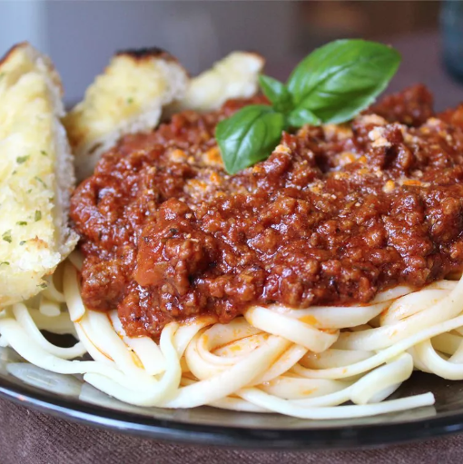

Rick's Delicious Spaghetti

This recipe was given to me as part of a wedding gift recipe collection from a very dear friend.
It is rich, aromatic, flavorful and makes A LOT.
So please grab the biggest pot you can find.
I mean REALLY BIG. Extra sauce freezes well for future pasta dishes.
Ingredients
- 1/2 cup butter
- 3 tablespoons olive oil
- 1 large onion, chopped
- 3 cloves garlic, chopped
- 1 pound ground beef
- 1 pound mild sousage
Steps
- Heat butter and olive oil together with onion and garlic in a large pot over medium heat; cook and stir ground beef and sausage in the onion mixture until browned and crumbly, 10 to 15 minutes.
Stir Italian seasoning, salt, rosemary, oregano, and black pepper into ground beef-sausage mixture; simmer for 20 minutes.
- Pour water, tomato puree, and tomato paste into ground beef-sausage mixture; simmer, stirring occasionally, over low heat until flavors have combined, at least 2 hours.